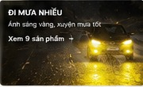
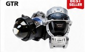
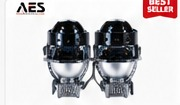
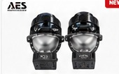
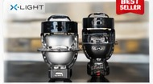
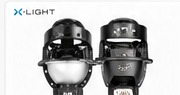
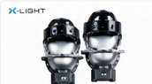
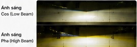

ĐI MƯA / SƯƠNG
CATEGORY COMMERCE HUB
Lọc theo xe, ngân sách, lens, nhiệt màu và công suất. So sánh sản phẩm trước khi đặt lịch thay vì chọn chỉ dựa trên một thông số.


Finder chuyển nhu cầu thành bộ lọc, không thay thế kiểm tra thực tế trước khi lắp.
Bi gầm là nhóm đèn lắp ở vị trí thấp phía trước xe để bổ sung vùng sáng gần mặt đường. Khi chọn cấu hình, nên xét đồng thời kích thước hốc đèn, lens 2.0/3.0 inch, nhiệt màu, beam pattern, hệ thống điện và khả năng căn chỉnh. Một sản phẩm đã lắp được trên một đời xe không có nghĩa mọi phiên bản của cùng dòng xe đều áp dụng giống nhau.
Đi từ nhu cầu thực tế rồi mới xem thông số phù hợp.

Chọn tối đa 3 sản phẩm từ catalog; bảng chỉ hiển thị dữ liệu có sẵn, không tự điền giá trị còn thiếu.
2.0 inch phù hợp bài toán hốc đèn nhỏ/gọn. 3.0 inch phổ biến ở nhiều cấu hình công suất cao hơn. Fitment thực tế vẫn phải kiểm tra theo xe.
Lọc lens 2.0 →3000K thiên vàng cho thời tiết xấu; 4300K cân bằng; 5500K trắng, rõ trong điều kiện khô và có đèn đường.
Xem mẫu 3 màu →Công suất chỉ là một phần. Beam pattern, độ phủ, tâm Pha, tản nhiệt và căn chỉnh sau lắp đều ảnh hưởng trải nghiệm thực tế.
Cùng một mẫu bi có thể không phù hợp mọi hốc đèn. Finder giúp thu hẹp; kiểm tra xe thực tế mới là bước chốt.
Gửi ảnh đầu xe →Mỗi case chỉ mô tả đúng cấu hình đã ghi nhận trên chiếc xe trong hồ sơ; xe khác cần kiểm tra lại hốc đèn, pát/bộ gá, hệ thống điện và góc chiếu trước khi áp dụng.

CASE 13/08/2026Ca xe dùng 01 cặp AES SV 3.0 Max tại hốc đèn gầm; Cos khoảng 45W, Pha khoảng 70W, 3 nhiệt màu 3000K/4300K/5500K.

CASE 11/08/2026Ca xe dùng 01 cặp F10 Turbo V2 4300K; Cos khoảng 45W, Pha khoảng 75W, lắp tại hốc đèn gầm.

CASE 17/08/2026Xe trong hồ sơ được lắp 01 cặp F10 Turbo V2 4300K, lens 3.0 inch, Cos khoảng 45W và Pha khoảng 75W.

CASE 23/07/2026Case Outlander dùng X-Light 301 V2 tại cụm đèn gầm: Cos khoảng 45W, Pha khoảng 55W, 3000K/4300K/5500K, lens 3.0 inch.
Authority của trang không đến từ mô tả bán hàng mà từ nguồn dữ liệu, case xe, người rà soát và giới hạn được công bố rõ.
Phụ trách rà soát kỹ thuật phụ kiện điện tử ô tô tại Auto365.vn - Trụ Sở Chính trong các hồ sơ case bi gầm được dẫn trên trang.

Đường cắt, độ phủ hai bên, vùng sáng thấp, độ gom tâm Pha và góc căn chỉnh cần được xem cùng công suất.
Bản prototype authority cập nhật: 22/08/2026.
Các module dưới đây viết theo answer-first để có thể đứng độc lập khi Google/AI Search trích dẫn, đồng thời dẫn người đọc về đúng cluster chuyên sâu.
2.0 inch phù hợp khi hốc đèn hạn chế không gian; 3.0 inch có nhiều cấu hình hiệu năng cao hơn nhưng cần đủ khoảng lắp. Không nên mặc định lens nhỏ là yếu hoặc lens lớn luôn tốt hơn.
3000K cho sắc vàng rõ; 4300K cân bằng giữa vàng và trắng; 5500K trắng hơn. Nhiều mẫu tích hợp 3 nhiệt màu để người dùng chuyển theo điều kiện, nhưng hiệu quả còn phụ thuộc mặt đường, thời tiết và beam pattern.
Công suất là một biến đầu vào. Trải nghiệm thực tế còn phụ thuộc quang học, đường cắt Cos, độ phủ, độ gom Pha, vị trí lắp, điện áp và chất lượng căn chỉnh. Vì vậy bảng sản phẩm phải đi kèm case và beam evidence.
Cần kiểm tra hốc đèn, mặt dưỡng, kích thước thân đèn, khoảng hở tản nhiệt, pát/bộ gá, dây/giắc và hệ thống điện. Một cấu hình đã lắp trên CX-5 2016 không tự động đại diện cho CX-5 đời khác.
Ánh sáng vàng hoặc trắng ấm thường được cân nhắc trong điều kiện mưa/sương, nhưng người dùng vẫn cần xem vùng Cos bám mặt đường, góc chiếu, phản xạ mặt đường và khả năng chuyển màu của từng sản phẩm.
Khả năng kiểm định cần đối chiếu theo cấu hình xe thực tế và quy định hiện hành tại thời điểm kiểm tra. Sau lắp cần ưu tiên đường cắt, góc chiếu phù hợp, hạn chế gây chói và tránh khẳng định pháp lý tuyệt đối khi chưa kiểm tra xe.
Đây là cấu trúc GEO: mỗi câu trả lời có entity rõ, dữ liệu có nguồn, liên kết đến bằng chứng và giới hạn áp dụng.
Câu đầu trả lời trực tiếp; phần sau bổ sung điều kiện và giới hạn để tránh câu khẳng định quá mức.
Bi gầm là cụm đèn sử dụng thấu kính hội tụ, lắp ở vị trí thấp phía trước xe để bổ sung vùng sáng gần mặt đường. Khả năng hỗ trợ thực tế phụ thuộc cấu hình sản phẩm, vị trí lắp và quá trình căn chỉnh sau thi công.
Khác trước hết ở kích thước lens và không gian lắp đặt. Lens 2.0 inch có lợi thế gọn hơn cho hốc đèn nhỏ; lens 3.0 inch có nhiều lựa chọn hiệu năng cao. Khả năng lắp vừa vẫn phải kiểm tra trên đúng xe.
3000K cho sắc vàng rõ, 4300K trắng ấm/cân bằng và 5500K trắng hơn. Không có một mức luôn tối ưu cho mọi tình huống; cần xem thêm mặt đường, beam pattern và điều kiện sử dụng thực tế.
Không. Watt không mô tả đầy đủ chất lượng vùng sáng. Nên xem cùng đường cắt Cos, độ phủ, độ gom Pha, tản nhiệt, điện áp, fitment và khả năng căn chỉnh.
Cần kiểm tra đời xe, hốc đèn, mặt dưỡng, kích thước thân đèn, pát/bộ gá, khoảng hở tản nhiệt, dây/giắc và hệ thống điện. Finder trên trang chỉ giúp sàng lọc trước.
Không. Case là bằng chứng một cấu hình đã được ghi nhận trên một chiếc xe cụ thể. Xe cùng dòng nhưng khác phiên bản, lịch sử sửa chữa hoặc hốc đèn vẫn có thể cần phương án khác.
Không nên khẳng định tuyệt đối. Kỹ thuật viên cần kiểm tra nguồn, dây, giắc, relay/cầu chì và cảnh báo điện theo từng xe; phương án đúng kỹ thuật giúp giảm rủi ro nhưng không thay thế bước kiểm tra thực tế.
Không nên cam kết chắc chắn khi chưa kiểm tra cấu hình xe và quy định hiện hành tại thời điểm kiểm định. Cần chú ý đường cắt, góc chiếu, khả năng gây chói và phạm vi thay đổi kết cấu thực tế.
Trang này là hub ngành hàng bi gầm, tập trung catalog, filter, so sánh và fitment tại hốc đèn gầm. Đèn gầm dạng rời là một giải pháp riêng có form factor, vị trí gá và nhóm sản phẩm khác.
Gửi đời xe + ảnh khu vực đèn gầm. Auto365 kiểm tra fitment trước khi bạn quyết định cấu hình.